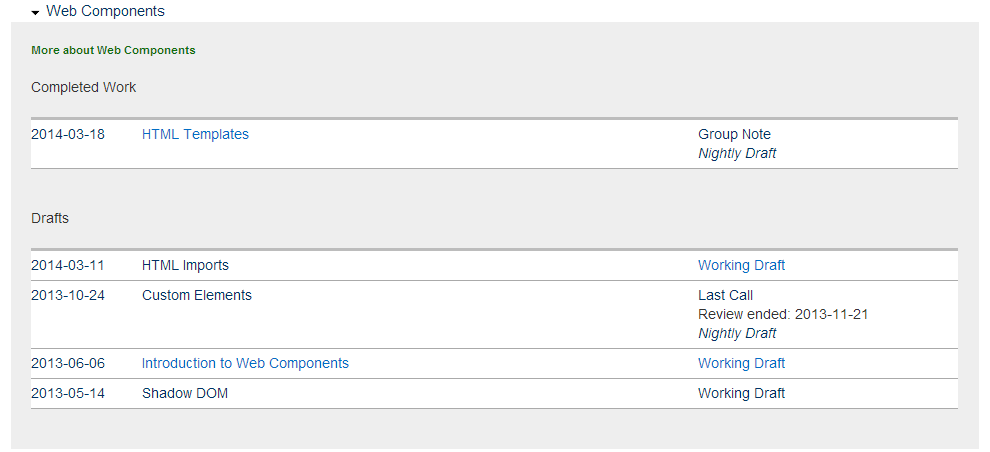

Web Components
Eine kurze Einführung
Mai 2014
Simon Heimler
www.fannon.de
Zukunft
Web Components?
(2014)
- Eine experimentelle Browser-Technologie
- Fokus: Web Anwendungen im Browser
- Aktuell in aktiver Entwicklung
Wozu Web Components?
- Eigene (native) HTML Elemente definieren
- Modulare Entwicklung
- Abstraktion
Wer steckt dahinter?
- W3C: Editor's Draft
- Google und Mozilla
Beispiele
Altbekanntes
HTML5 Input Type: Range
X-Tag: Sparklines
Neue Elemente "erfinden"
![]()
Responsive Images?
Wird seit Jahren von Webentwicklern gewünscht. Browserhersteller können sich nicht einigen.
Übersicht
Nach den W3C Drafts
5 Kernkomponenten
http://www.w3.org/TR/components-intro/
1. Templates
2. Decorators (Noch keine Spezifikation)
3. Shadow DOM
4. Custom Elements
5. Imports
Templates
The
<template>element contains markup intended to be used later.The content of the
<template>element is parsed by the parser, but it is inert: scripts aren't processed, images aren't downloaded, and so on.The
<template>element is not rendered.Jens Ihlenfeld 2013 (http://www.w3.org/TR/components-intro/#template-section)
Code

Decorators
A decorator is something that enhances or overrides the presentation of an existing element.
Jens Ihlenfeld 2013 (http://www.w3.org/TR/components-intro/#decorator-section)
Decorators, unlike other parts of Web Components, do not have a specification yet.
Jens Ihlenfeld 2013 (http://www.w3.org/TR/components-intro/#decorator-section)
Überspringen wir!
Custom Elements
Custom elements are new types of DOM elements that can be defined by authors. Unlike decorators, which are stateless and ephemeral, custom elements can encapsulate state and provide script interfaces.
Jens Ihlenfeld 2013 (http://www.w3.org/TR/components-intro/#custom-element-section)
…
Features
- Eigene Methoden und Eigenschaften
- Lifecycle Callbacks
- readyCallback
- insertedCallback
- removedCallback
Verwendung
- Einfach: Markup im HTML
- HTML ist das API!
- Advanced: Mit JavaScript:
new Element()
- Erweiterbar:
extend
Shadow DOM
Shadow DOM is an adjunct tree of DOM nodes.
These shadow DOM subtrees can be associated with an element, but do not appear as child nodes of the element. Instead the subtrees form their own scope.
Jens Ihlenfeld 2013 (http://www.w3.org/TR/components-intro/#custom-element-section)
- Element hat eigenen JavaScript und CSS Scope!
- Kann Black-Box sein, muss aber nicht
- Komplexeres Thema
Imports
HTML Imports are a way to include and reuse HTML documents in other HTML documents.
Dimitri Glazkov 2014 (http://www.w3.org/TR/2014/WD-html-imports-20140311/)
<link rel="import" href="goodies.html">
- Komponente wird als eine HTML Datei importiert
- Dieses beinhaltet:
- Templates als HTML
- JavaScript
- CSS
- Weitere Module / Komponenten
Hintergrund
Wie es aktuell läuft
- Browser Hersteller sind sehr langsam in der Entwicklung neuer Standards
- Community ist meist schneller und iterativer (jQuery)
- Die besten Lösungen setzen sich durch
Mit WebComponents
- Browser Hersteller erlauben Entwickleren tieferen Zugang (low level) zum Browser
- Webentwickler können Features entwickeln bevor sie von den Browser Herstellern unterstützt werden
- Browser Hersteller können dann etablierte Standards übernehmen und optimieren
Aussicht
Etablierter Standard
Warten auf...
- Feste Standard Definition
- W3C Recommendation
- Browser Support
Bis dahin...
- Abwarten.
- Bis dahin: Polyfills?
Fragen?
Quellenverzeichnis
- Dimitri Glazkov; Dominic Cooney (2013): Introduction to Web Components. W3C. Online verfügbar unter http://www.w3.org/TR/2013/WD-components-intro-20130606/, zuletzt geprüft am 26.04.2014.
- Dimitri Glazkov (2013): Custom Elements. W3C. Online verfügbar unter http://www.w3.org/TR/2013/WD-custom-elements-20131024, zuletzt geprüft am 28.04.2014.
- Dimitri Glazkov; Hajime Morita (2014): HTML Imports. W3C. Online verfügbar unter http://www.w3.org/TR/2014/WD-html-imports-20140311/, zuletzt geprüft am 28.04.2014.
- Jens Ihlenfeld (2013): HTML-Elemente selber bauen. Hg. v. golem.de. Online verfügbar unter http://www.golem.de/news/web-components-html-elemente-selber-bauen-1305-99318.html, zuletzt aktualisiert am 17.05.2013, zuletzt geprüft am 28.04.2014.
- Rob Dodson: Web Components & The Future of the Web. Online verfügbar unter https://www.youtube.com/watch?v=Byux3Jfw5e8, zuletzt geprüft am 26.04.2014.
Folien online:
http://fannon.de/p/web-components